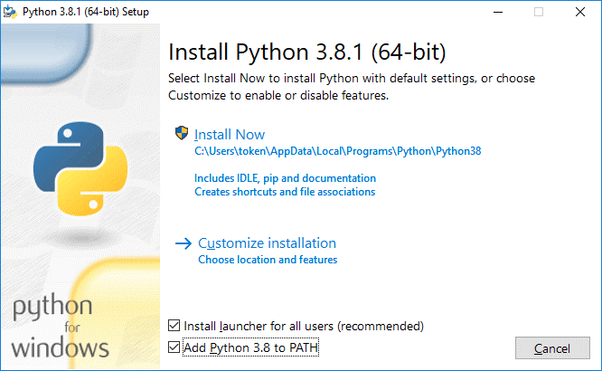
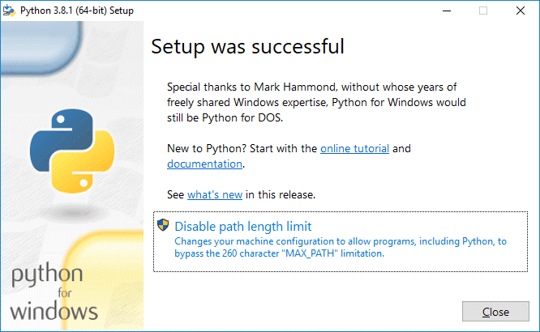
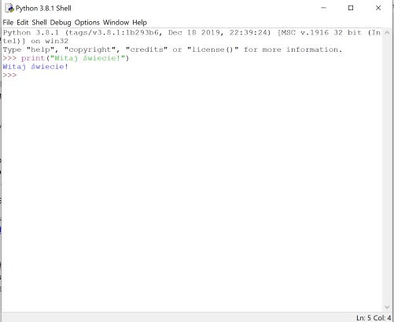
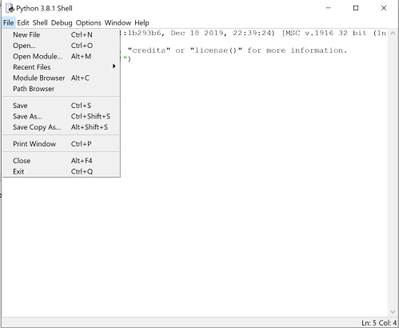
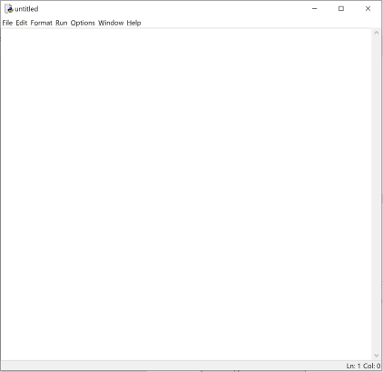
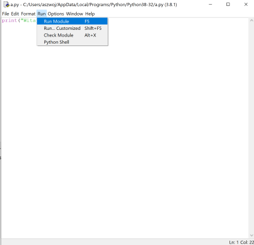

Wstęp
Michał Pilarski
Python jest bardzo ciekawym językiem. Dzięki niemu można zrobić co chcesz. Chcesz coś narysować – możesz to zrobić w Pythonie. Chcesz zrobić grę – możesz to zrobić w Pythonie. Jednak, żeby zrobić grę w Pythonie trzeba znać podstawy. Dlatego gorąco zachęcam Ciebie do udziału w wyzwaniach, które przygotowałem. Na czym polega zabawa?
Przygotowałem 10 wyzwań do rozwiązania w Pythonie. Jak rozwiążesz wyzwanie, dostaniesz w nagrodę część hasła (w tym celu zgłoś się po nie do nauczyciela). Jak rozwiążesz wszystkie wyzwania to skompletujesz całe hasło, które jest przepustką, aby otrzymać główną nagrodę, czyli grę o nazwie „Pythonowy labirynt”.
Instalacja środowiska
Aby rozpocząć przygodę w Pythonie, trzeba zainstalować Pythona na komputerze. Instalator do Pythona znajduje się pod tym adresem. Po pobraniu instalatora należy uruchomić pobrany plik.
Tutaj wybieramy opcję Install Now.
Teraz wybieramy Close. Już masz zainstalowanego Pythona na twoim komputerze.
Jeśli nie możesz zainstalować Pythona, możesz programować używając strony Trinket lub repl.it.
Podstawowe instrukcje
Po zainstalowaniu Pythona możesz już zacząć zabawę w programowanie. Napiszmy pierwszy program w Pythonie. Aby rozpocząć programowanie w Pythonie trzeba uruchomić program Python IDLE. Programiści, kiedy rozpoczynają przygodę z Pythonem piszą „Witaj świecie”.
Po napisaniu linijki powyższego kodu w Pythonie, wynik na ekranie powinien wyglądać tak:
Niestety twojego programu nie można zapisać i po zamknięciu okna stracisz swoją pracę. W celu zapisania swojego programu wykonaj poniższe czynności.
Żeby zapisać swój program, należy utworzyć nowy plik. Tworzymy nowy plik klikając na File, a potem na New File.
Wtedy zobaczysz puste okienko (widok poniżej). W tym okienku można pisać swój kod. Przepisz do tego okna kod wypisujący „Witaj świecie!”.
Jak teraz uruchomić program? To proste: należy go zapisać i kliknąć na Run, a potem Run Module. Kiedy program się uruchomi zobaczysz tekst „Witaj świecie”.
Zmienne
Python pozwala nie tylko na wypisywaniu tekstu. W Pythonie można też zapisywać różne rzeczy w zmiennych. Zmienna to szufladka do, której można wrzucić tekst lub liczbę. Zmienne mogą mieć różne nazwy np. x lub potwor. PAMIĘTAJ nazwy zmiennych nie mogą zawierać spacji, niektórych znaków specjalnych i polskich znaków, dodatkowo zmienna napisana duzą literą jest inną zmienną niż napisana małą literą. Żeby w zmiennej coś umieścić należy napisać:
Aby wyświetlić zmienną, wystarczy napisać print(zmienna) lub drugi przykład print(Inna_zmienna).
A wynikami będą: 5 lub dla drugiej zmiennej Jestem zmienną
Dla lepszego zrozumienia późniejszych fragmentów kodu będę wprowadzał komentarze. Które zaczynają się tak: